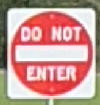
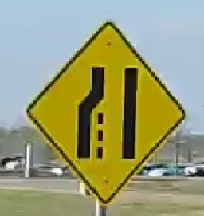
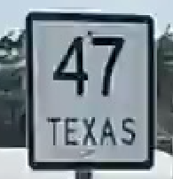
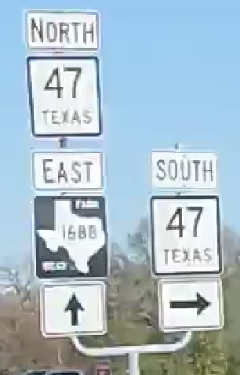
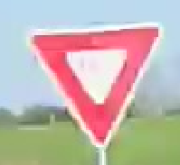
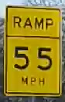

About
While construction officers in the traffic department trying to detect the integrity of infrastructures by eyes can be repetitive and increase human error, it is possible to use computer vision and machine learning to replace such monotonous jobs. In this project we will detect the integrity and then use models like NeRF to reconstruct the device within scenes. And for special instruments, with data of their models, we can detect their completeness or construct a scene with it placed inside a specific location. Such methods will decrease erroneous detection and help discover minor defects which are hard to detect by human eyes or hard to remember.
Features
Object Detection
Transform
Transform all paranomas into several normal pictures without losing information.Panorama

Trans result

Model Evaluation
Test various of pre-trained model for categories of traffic signs.- https://github.com/Winston0323/Panorama2Skybox.gitYolo v8 in COCO
- Yolo v5 in GTSDB
- Retina Net
- Retina Net with TT100K
| Sign | Total Number | YOLO V8 in COCO | YOLO V5 in GTSDB | Retina Net | Retina Net in TT100K |
|---|---|---|---|---|---|
|  | 8 | 8 | 8 | 8 | 8 |
| 14 | 0 | 0 | 0 | 0 | |
|  | 12 | 0 | 7 | 11 (2 not full cover) | 8 |
|  | 9 | 0 | 0 | 0 | 0 |
|  | 2 | 0 | 0 | 0 | 0 |
|  | 1 | 0 | 1 | 0 | 1 |
|  | 1 | 0 | 0 | 0 | 0 |
 |
1 | 0 | 0 | 0 | 0 |
Detection Results
Good Detection
Not full coverage
Data generation
panorama

skybox


Unity Reconstruction scene


Movement inside scene

Team
- Cheng Niu
- Zixi Liu